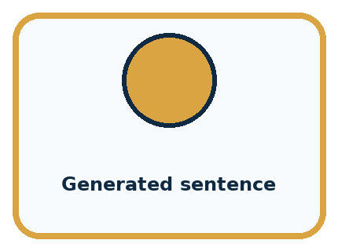
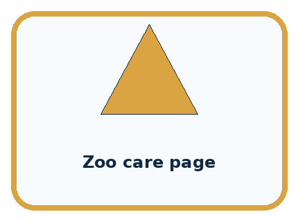
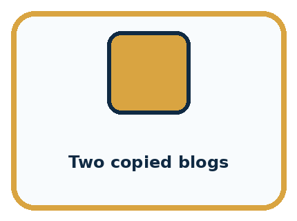
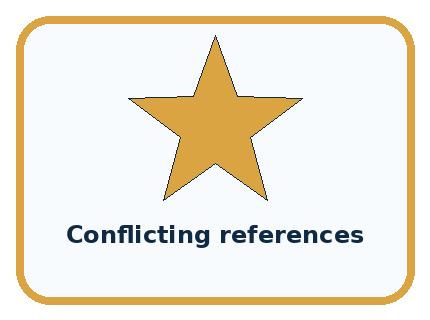

AI Academy · Level 1 · Grade 6 · Week 27 · Student lesson
Verify Important Outputs
Learn to understand, design, build, test and explain AI systems responsibly.
Project: Helpful Classroom Sorter
THE CONNECTED WEEK
Check each claim. Keep the units. Follow the evidence.
Audit sources, verify a ribbon calculation in two ways and distinguish an error from an unresolved claim.
Keep one habit: Split the draft → choose each check → report the supported correction and its limits.
Main lesson · Section 1
Which claims can the evidence actually support?
Separate facts, calculations and unresolved promises.
Start with a mixed-quality answer
One paragraph can contain a correct count, a wrong unit and an unsupported promise. Check each claim separately instead of giving the whole paragraph one yes-or-no verdict.
Recall format versus factual support
A response follows the requested four-line format but invents a missing start time. Has it passed the task? Explain.
Close your notes first. A rough first answer helps us choose the right starting point; it is not a score for your ability.
After trying, check the relevant lesson or ask your teacher. Change the part of your explanation that the evidence shows was wrong.
Your learning goals
I can separate an answer into claims and connect each claim to relevant evidence.
I can recalculate quantities with consistent units and a reasonableness check.
I can report supported, contradicted and unresolved claims without inventing missing evidence.
Earlier wording, alternatives and picture transcripts
Your learning target
Remember before reading
Without opening the old lesson, explain one key idea from Prompts Are Design Instructions. Give an example and a mistake that the idea helps you avoid.
Without opening the old lesson, explain one key idea from Privacy by Choosing Less. Give an example and a mistake that the idea helps you avoid.
Without opening the old lesson, explain one key idea from Good Data, Bad Data. Give an example and a mistake that the idea helps you avoid.
Fluent AI output is not evidence; important claims need independent support.

LEARNING TARGET A generated report says 18 of 24 tests passed, so success was 80%. Verify the claim in two ways and write a corrected sentence.
Learner name:
Readiness for the connected explanation
This week’s end goal
By the end, I can verify quantities with consistent units and separate arithmetic from unsupported claims.
Main lesson · Section 2
Meet materials card R and the draft
Keep the current ribbon activity separate from old card Q.
Separate the paragraph into claims
An answer can contain a mixture of correct, incorrect and unverified statements. Checking one sentence does not validate every other sentence. First separate the answer into individual claims.
Then ask what evidence would support each one: a record, a measurement, a calculation or some combination.
Read the current record and model assumptions
Our fictional ribbon activity uses current materials card R. R states: four rolls of ribbon, each exactly 2 metres long; twelve pieces will each use 50 centimetres; no cutting loss is included in this paper model.
One metre equals 100 centimetres. An old card Q describes a different activity with three rolls. These are provided classroom records, not instructions to cut real materials.
Inspect the five draft claims
A draft says “R gives four rolls. The starting length is 8 metres. The pieces use 600 metres. Two metres remain. Every participant will enjoy the activity.” Do not approve or reject the whole paragraph at once.
Inspect the roll count, starting length, used length, remaining length and enjoyment claim separately.
Earlier wording, alternatives and picture transcripts
PICTURE STORY
Look Closely Before You Explain
Pictures give clues; evidence tells us what the clues mean.

MYSTERY A generated paragraph confidently claims that an animal lives in a region; the wording is not evidence that the claim is true.
What do you notice?
Name three visible details without explaining them yet.
Circle the detail most connected to the system's decision.
Name one detail that may be decoration or distraction.
Make a first prediction and state the clue that supports it.
My observations, prediction, and evidence:
GOOD THINKING A prediction can change when stronger evidence appears.
A closer explanation
Main lesson · Section 3
Match each claim to a suitable check
A nearby citation supports only what its actual contents establish.
Inspect the claim-by-claim evidence table
Different claims need different checks
Check that a citation is available and relevant
A citation is useful only if you can locate the source and confirm that it supports the specific claim. The title “Materials card R” beside a paragraph does not make the enjoyment claim part of R.
If a cited card Z is not supplied or cannot be found, that citation cannot currently verify its claim. Record the gap rather than inventing Z’s contents.
Check the activity and version
Check whether the source covers the right activity, version, population or time. Q’s three rolls may be accurate for its own activity but irrelevant to the current four-roll task.
In real work, also inspect who created the record, how they obtained the information and whether there is a correction or better source.
Point to the input, the deciding step and the result in this week’s visual. Explain the same step in ordinary words. A picture helps when you can say what each part represents.
Earlier wording, alternatives and picture transcripts
VISUAL MECHANISM
Input → Process → Output
Follow the information instead of imagining magic inside the machine.


INPUT specific claim extracted from an output
PROCESS check independent suitable sources and reconcile differences
OUTPUT supported, corrected, uncertain, or removed claim
CORE IDEA Fluent AI output is not evidence; important claims need independent support.
UNDER THE HOOD Verification is claim-level evidence work. Source independence, authority, direct support, recency, and agreement matter. Multiple pages repeating the same upstream error are not independent confirmation.
Draw a fresh example with all three stages:
A closer explanation
Connect the picture and the explanation
Main lesson · Section 4
Compare evidence with repeated assertions
Two copied pages are not two independent confirmations.
Pictures paired with their evidence


The case to investigate
CASE 1 — Generated sentence Clue: fluent output. Meaning: claim, not evidence.


The case to investigate
CASE 2 — Zoo care page Clue: direct animal information. Meaning: possible source.


The case to investigate
CASE 3 — Two copied blogs Clue: same origin. Meaning: not independent.


The case to investigate
CASE 4 — Conflicting references Clue: evidence disagrees. Meaning: report uncertainty.
Discuss the confusing pair
Which two pictures are easiest to confuse? What evidence separates them?
Keep the limit in view
BOUNDARY Two search results are not two independent sources when both copy the same page.
Earlier wording, alternatives and picture transcripts
PICTURE GALLERY
Four Cases, Four Clues
Use the visual cue, then read the evidence carefully.
CASE 1 — Generated sentence Clue: fluent output. Meaning: claim, not evidence.
CASE 2 — Zoo care page Clue: direct animal information. Meaning: possible source.
CASE 3 — Two copied blogs Clue: same origin. Meaning: not independent.
CASE 4 — Conflicting references Clue: evidence disagrees. Meaning: report uncertainty.
Change one thing in the pictured case
Change: Make ten bookmarks instead of eight.
Prediction: 100 cm, or 1 m, remains.
Reason: 600−10×50=100 cm.
Main lesson · Section 6
Trace the separate bookmark calculation
These four 150 cm rolls are a different dataset from card R’s four 2 m rolls.
The bookmark facts and explicit assumptions
A fictional craft sheet calculates ribbon left after making bookmarks.
Four rolls each contain exactly 150 cm. Eight bookmarks use exactly 50 cm each.
No other ribbon loss is assumed; no competition result is recorded.
Inspect the labelled quantity comparison


Trace the bookmark arithmetic and claim audit


Read the picture one step at a time
Explain units and unsupported claims
All arithmetic first uses centimetres. Converting only after subtraction avoids mixing units. The record supports available, used and remaining lengths under its no-loss assumption. It does not support a promise about winning.
A numerically correct total elsewhere in a draft cannot rescue a wrong unit or an invented claim.
Read the labelled picture: Correct the draft and identify which part needs another source rather than a calculation.
Predict ten bookmarks
Before opening the changed-bookmark picture, make ten bookmarks from the same four 150 cm rolls, still assuming no other loss. Predict the remaining length in centimetres and metres. Which promise about winning remains unsupported?
Check the changed calculation


Keep the no-loss assumption visible
Real cutting losses or inaccurate roll lengths would change this toy calculation; the assumption must be declared.
Earlier wording, alternatives and picture transcripts
WORKED EXAMPLE
Watch the Reasoning, Not Just the Answer
Every step connects a claim to observable evidence.

CASE A generated paragraph confidently claims that an animal lives in a region; the wording is not evidence that the claim is true.
STEP 1 — OBSERVE specific claim extracted from an output
STEP 2 — TRACE check independent suitable sources and reconcile differences
STEP 3 — CONCLUDE supported, corrected, uncertain, or removed claim
MODEL REASONING Check the exact claim, not the whole paragraph. Use sources with direct relevant evidence, note publication context, and explain whether they independently agree.
If evidence is weak or conflicting, revise or remove the claim.
DO NOT OVERCLAIM Two search results are not two independent sources when both copy the same page.
What new evidence could change this answer?
A closer explanation
| Quantity | Calculation in centimetres | Equivalent in metres |
|---|---|---|
| Starting length | 4 × 200 cm = 800 cm | 8 m |
| Length used | 12 × 50 cm = 600 cm | 6 m |
| Length remaining | 800 cm − 600 cm = 200 cm | 2 m |
Convert to one length unit before subtracting. Two metres is 200 centimetres, so four rolls give 800 centimetres. The twelve pieces use 600 centimetres, leaving 200 centimetres, or 2 metres.
Subtracting the bare numbers 8 − 600 would mix metres with centimetres and would not describe the remaining length correctly.
Use a second route as a check: 50 centimetres is half a metre, so twelve pieces use six metres. Eight minus six leaves two metres.
A reasonableness check also asks whether the used length is at most the starting length and whether starting length equals used plus remaining.
These checks can reveal mistakes; they do not replace checking the original inputs and assumptions.
Learn from the worked case
Cover the result before checking it. Say what is given, choose the procedure, and follow one step at a time. Then uncover the result and explain your first mismatch. Ask why a step is allowed, not only what number it produces.
A pictorial worked case: Verify Important Outputs
The facts we will use


Why this result follows
What this example does not establish
Change one thing: Make ten bookmarks instead of eight. Predict the result before checking the explanation. What remains the same?
Main lesson · Section 7
Write a correction that preserves its conditions
Name the source, expression, unit and unresolved evidence.
Model a complete correction using card R
A useful correction names the original claim, relevant source, calculation with units and revised conclusion. For example: R lists four 2-metre rolls and twelve 50-centimetre pieces.
The pieces use 600 centimetres, or 6 metres; the paper model leaves 2 metres when no cutting loss is included. This preserves the condition on which the result depends.
Explain what would change the model
If the real activity loses ribbon at each cut, the no-loss result cannot simply be reused. Obtain that missing information or label the answer as a model with an explicit assumption.
Similarly, if you cannot access a source, mark the claim unresolved and identify what evidence would settle it. Repeating a confident answer is not a new measurement.
Repair both tempting claims
CLAIM A Professional wording is evidence of accuracy.
CLAIM B The first two agreeing links settle every claim.
STRONG ANSWER FRAME I claim ______ because the evidence shows ______. The process is ______. One limit is ______.
Earlier wording, alternatives and picture transcripts
COMPARE
Same Result, Different Reason
A comparison helps reveal the true concept boundary.
| Case | Evidence | What it shows |
|---|---|---|
| Generated sentence | fluent output | claim, not evidence |
| Zoo care page | direct animal information | possible source |
| Two copied blogs | same origin | not independent |
| Conflicting references | evidence disagrees | report uncertainty |
Repair two tempting claims
Repair:
Repair:
A closer explanation
Main lesson · Section 8
Practise: distinguish wrong from not yet verified
Lack of enjoyment evidence does not establish that nobody will enjoy the activity.
Classify the unit error and enjoyment claim
The claim “600 metres used” conflicts with the stated inputs and calculation. The claim “everyone will enjoy it” is not supported by R or by any supplied enjoyment evidence. That does not establish that nobody will enjoy it.
State “not verified from these records” rather than changing an unsupported positive claim into an unsupported negative claim.
Follow repeated claims back to their origin
Suppose three posters repeat the same number and each copied it from one unverified draft. That is three copies of one claim, not three independent measurements. Follow references back to their origin.
A separate check of R and the arithmetic provides more useful evidence than counting copies that repeat the same mistake.
Repair the unit error in W2
Use workbook W2 for the connected example “Verifying claims and quantities”. First fill the input and rule boxes. Try the middle steps before asking for a hint. After a hint, try the next step yourself.
| Plan | Do | Check |
|---|---|---|
| What is given? Which rule or procedure applies? | Record each intermediate step. | Does the result follow? What remains unknown? |
Explain your trace to a partner. Your partner points to one step to check. Swap roles on the next case. Each person writes their own explanation.
Challenge the citation claim
Use the worked case for Verifying claims and quantities. Proposed explanation: “A citation proves every nearby claim”. Decide whether this explanation is supported.
Point to the step or supplied fact that decides; explain your repair if needed.
Answer on your own before discussion. If you are unsure, say which step you need help with.
Return to the bookmark draft
Correct the draft and identify which part needs another source rather than a calculation.
This is supported practice. Keep the separately named independent case for an attempt before feedback.
Earlier wording, alternatives and picture transcripts
GUIDED PRACTICE
Try It, Check It, Explain It
Use support now so you can succeed independently later.

Explain how the picture story demonstrates this idea: Fluent AI output is not evidence; important claims need independent support.
Use a fresh example to explain claim.
Trace a new input → process → output example.
Find and repair the error in: The first two agreeing links settle every claim.
Invent one edge case and name the safe response.
PARTNER CHECK Point to the evidence. Do not accept an answer that only repeats the vocabulary word.
A closer explanation
Practise with less help: Repair a unit error
Check your reasoning
Explain the picture
Main lesson · Section 9
Investigate source independence with supplied records
Use a fictional animal so the evidence and its origins are fully inspectable.
The draft and three source cards
Fictional source audit; no animal research or internet search is needed. Draft: “The invented silver kitebird was observed in Meadow Park on Monday, and silver kitebirds are never observed anywhere else.” Source A is a dated observer log recording one silver kitebird at Meadow Park on Monday. Source B is a poster explicitly copied from A. Source C is a separately made observer log recording one silver kitebird at River Park on Tuesday. Treat the supplied logs as the accepted observations for this paper exercise; they are not real wildlife records.
Predict, audit and correct each claim
Predict which parts of the draft each source can support. Make separate rows for the Monday sighting and the claim that silver kitebirds are never observed outside Meadow Park. Record each source’s origin and direct evidence. Explain why B adds no independent observation, how C bears on the “never observed elsewhere” claim, and why these logs do not establish every place kitebirds can be found. Write a corrected statement limited to the supplied observations. Mark any actual field investigation “not run”.
Keep a normal case and an edge case clearly separated.
Record what happened—even when it does not match your prediction.
Explain the result, one limitation, and the next useful test.
Keep observations and remaining limits
| Case | Prediction | Observed result | What it means |
|---|---|---|---|
| Normal | |||
| Edge |
Before trying: what do I expect, and why? While trying: which step could first go wrong? Afterwards: what did I actually observe, and what should change? Keep “not run” if you only traced the procedure.
Earlier wording, alternatives and picture transcripts
EXPLORER LAB
Two-Source Claim Check
Predict first, test honestly, and explain what the evidence means.

State your prediction before the result is known.
Complete the task: Use a two-source checklist on a generated animal fact.
INDEPENDENCE After support is removed, repeat the proof with a fresh case.
Plan → try → check
Main lesson · Section 14
Try alone: audit the new mass-unit draft
Use craft card M before consulting feedback.
The independent record and four claims
Fictional craft card M states five sealed bags of modelling material at exactly 250 g per bag. Three models each use 300 g, with no other loss.
A draft says “M supplies 1250 g; the models use 900 g; 350 kg remains; every model will win a prize.” Check all four claims, show the remaining mass in grams, and explain the status of the prize claim. Use 1 kg = 1000 g.
Keep your first attempt
Attempt this case before feedback. Record any help. Earlier examples below are further practice; a case already practised with feedback cannot establish fresh transfer.
Your teacher has the independent answer and scoring criteria. Complete the matching workbook week to keep your practice evidence together.
Use feedback afterwards
Attempt the independent case before hints. Record whether you worked alone, used a hint or followed a model. After feedback, fix the first unsupported step and explain why it changed.
A later check uses a changed case, not a copied answer.
Earlier wording, alternatives and picture transcripts
Independent case: Audit a new model with mass units
Week 27 Independent application
Close the worked explanation. Apply the idea to this different question without copying.
An assistant says the school library opens at 8, but today's official notice says 9. Which source should guide today's visit? Explain the check.
My answer, with a trace, calculation or supporting evidence
Create and test
Change one relevant detail. Predict the result before testing. Include a boundary or missing-information case when it helps reveal a limit.
My changed input and expected result
Connect to your project
Require human confirmation for important sorter outputs and attach the evidence record used to approve each rule or label.
The evidence I will keep
Transfer practice from the original programme
A generated report says 18 of 24 tests passed, so success was 80%. Verify the claim in two ways and write a corrected sentence.
Use feedback to improve
Main lesson · Section 11
Attach the evidence behind important sorter outputs
Verify a particular claim rather than approving an entire explanation.
This week’s project decision
THIS WEEK'S CHECKPOINT Require human confirmation for important sorter outputs and attach the evidence record used to approve each rule or label.
Check sorter calculations with explicit units and verify explanation claims against their actual catalogue evidence.
Plan source and calculation checks
What real classroom need does this serve?
What information is necessary—and what should stay private?
What happens inside the process?
What normal and edge cases will you test?
When should it say not sure or ask a person?
Inspect independence before counting sources
RESPONSIBLE DESIGN Two search results are not two independent sources when both copy the same page.
Earlier wording, alternatives and picture transcripts
PROJECT
Helpful Classroom Sorter
Build one coherent system across the year, one evidence-based decision at a time.


My project decision:
Evidence for your project
Main lesson · Section 16
Finish: justify each verification decision
Close your notes and distinguish contradicted claims from unresolved ones.
Your exit explanation
Close your notes. Explain this goal in your own words: Separate an answer into claims and connect each claim to relevant evidence
Choose the next changed-case check
If you are unsure, return to the worked picture and explain one arrow. If you are ready, change an input or assumption and justify your prediction.
Save your workbook evidence. At the next review, try a different case before opening your old answer.
Reference bank and extra practice
Choose the reference that helps your next step.
Your quick word guide
Reference · Section 5
Your quick word guide
Use the words to explain a particular step, record or limit.
Core vocabulary
| Word | Meaning | My example |
|---|---|---|
| claim | statement that can be checked | |
| source | origin of evidence | |
| independent | not merely copying the same origin | |
| corroborate | support a claim with separate evidence |
Terms for the connected explanation
| Word | Meaning |
|---|---|
| Verification | Checking whether a claim is supported by appropriate evidence |
| Citation | A reference that helps a reader locate a source |
| Unit | The agreed measurement scale attached to a quantity, such as centimetres |
| Corroboration | Additional evidence that supports a claim, with its origin checked |
Repair a claim using a word
CLAIM TO REPAIR Professional wording is evidence of accuracy.
Use one vocabulary word and one piece of evidence to repair it:
Earlier wording, alternatives and picture transcripts
VOCABULARY
Words You Can See and Use
The badge is a memory cue; the definition does the real thinking work.


Misconception detective
WORD POWER A strong definition helps you decide something in a new case.
Words used in the closer explanation
Choose a stronger thinking challenge
Reference · Section 10
Choose a stronger thinking challenge
Choose the next useful challenge rather than treating the whole ladder as compulsory.
Pick your next step
RECALL Define claim.
EXPLAIN Fluent AI output is not evidence; important claims need independent support.
TRACE Show the input, process, and output.
DIAGNOSE Repair: Professional wording is evidence of accuracy.
TRANSFER Apply the idea to a new home or classroom case.
CREATE Design one revealing test.
DEFEND Give a claim, evidence, mechanism, limit, and safe action.
Earlier wording, alternatives and picture transcripts
PRACTICE LADDER
Climb from Recall to Defense
Each step asks for a stronger kind of understanding.

RETRY RULE A coached answer becomes mastery only after you solve a different case independently.
Reference: check your explanation
Reference · Section 12
Reference: check your explanation
Use after practice. Audit a new model with mass units is the selected independent case.
Check the evidence and its limit
□ Name or draw the fresh case.
□ Trace input, process, and output.
□ State the conclusion and strongest evidence.
□ Name one limit, failure, missing clue, or fairness/privacy concern.
□ Explain one safe next action or improvement.
Record support
My level: □ Not yet □ With one hint □ Independently □ I can teach it
Earlier wording, alternatives and picture transcripts
MASTERY
Checklist for explaining this week’s idea
Use after practice. Audit a new model with mass units is the selected independent case.

EXPLANATION CHECK Check each claim against its relevant record, calculate with consistent units and retain unresolved assumptions.
Independent evidence:
SELF-CHECK Check the exact claim, not the whole paragraph. Use sources with direct relevant evidence, note publication context, and explain whether they independently agree.
If evidence is weak or conflicting, revise or remove the claim.
NEXT BRIDGE Carry today's evidence habit into: Humans Set Boundaries.
Extra practice: Six groups of four make twenty-four
Reference · Section 13
Extra practice: Six groups of four make twenty-four
Try the question before opening its worked explanation.
Read the supplied case and question
An answer says six groups of four make 28.
Verify independently.
Your explanation
Which detail supports the answer, and why does it matter?
Check after trying
Six times four is 24. Draw six groups or add four six times. Confident wording does not change arithmetic.
| Evidence or stage | Value or result |
|---|---|
| Group 1 | 4 |
| Group 2 | 4 |
| Group 3 | 4 |
| Group 4 | 4 |
| Group 5 | 4 |
| Group 6 | 4 |
Earlier wording, alternatives and picture transcripts
Week 27 Worked case
Use the supplied details to practise the weekly concept before attempting the independent question. This case extends the illustrated lesson.
The situation
The question
Worked explanation
Explain it in your own words
Trace the supplied case visually
Six groups of four make twenty-four
An answer says six groups of four make 28.
Verify independently.
Six times four is 24. Draw six groups or add four six times. Confident wording does not change arithmetic.
Reference: original lesson checklist
Reference · Section 15
Reference: original lesson checklist
Use an additional checklist when it helps inspect your explanation.
Targets and evidence
| By the end, I can | How I will show it |
|---|---|
| Separate an answer into claims and connect each claim to relevant evidence | Explain the deciding step, show a trace or test, and state one limit. |
| Recalculate quantities with consistent units and a reasonableness check | Explain the deciding step, show a trace or test, and state one limit. |
| Report supported, contradicted and unresolved claims without inventing missing evidence | Explain the deciding step, show a trace or test, and state one limit. |
Keep your route and first prediction
Remember → watch and explain → try with help → investigate → try independently → keep project evidence. Your teacher may spread this lesson across several classes.
Keep your first prediction. Compare it with what the evidence shows and explain any change.
Earlier wording, alternatives and picture transcripts
Start with this question: A fictional craft sheet calculates ribbon left after making bookmarks.
Extra practice: pictures, repair and feedback
Reference · Section 17
Extra practice: pictures, repair and feedback
Attempt each question before opening its explanation. Use one browser or paper copy.
First supported question
A fictional craft sheet calculates ribbon left after making bookmarks.
Which labelled step matches this detail? “200 m remains and everyone wins” fails unit and evidence checks.
1. Audit draft
2. Remainder
3. Ribbon used
4. Available ribbon
Hint if needed: Read the steps in the pictorial case. Match the supplied detail to the stage that performs or records it.
Practice 1: explain the deciding evidence
Check the first explanation
After your attempt, compare with the supported explanation: Audit draft “200 m remains and everyone wins” fails unit and evidence checks. All arithmetic first uses centimetres.
Converting only after subtraction avoids mixing units. The record supports available, used and remaining lengths under its no-loss assumption. It does not support a promise about winning.
A numerically correct total elsewhere in a draft cannot rescue a wrong unit or an invented claim.
Changed-case question
Changed-case practice: Make ten bookmarks instead of eight. Which conclusion is supported by the supplied facts?
1. We can decide the result without examining the changed input or the procedure.
2. This one example guarantees correct results for every future input.
3. 100 cm, or 1 m, remains.
Hint if needed: Use the changed condition and the deciding step in the pictorial trace. The answer must say what follows from those facts.
Practice 2: explain the deciding evidence
Check the changed case
After your attempt, compare with the supported explanation: 100 cm, or 1 m, remains. 600−10×50=100 cm.
Repair and save your work
Review Prompts Are Design Instructions (ai-1/26). Goal: Write a prompt with a clear task, supplied evidence and checkable output requirements.
Short practice: What must happen if B instead conflicts with another equally authoritative duration record?. Return to this week and explain what you changed.
Review Privacy by Choosing Less (ai-1/24). Goal: Justify which information a stated task needs and remove unnecessary fields.
Short practice: For the original task, does adding an anonymous-looking pupil code improve the repair count?. Return to this week and explain what you changed.
Review Good Data, Bad Data (ai-1/21). Goal: Check records against a stated format, unit and meaning before using them. Short practice: Which repairs are evidence-backed in the original case, and which row must remain unknown?.
Return to this week and explain what you changed.
Use Download completed work in the hosted lesson to export your answers, reflections, practice feedback and code-run evidence. Open the HTML copy to read or print it.
Drafts stay in this browser when storage is available; clear drafts on a shared device.
Earlier wording, alternatives and picture transcripts
Use this supported practice once, in the browser or on paper. Keep the reserved independent assessment for a separate first attempt before teacher feedback.
Repair a missing building block
Keep your completed work
Reference: the six-picture journey
Reference · Section 18
Reference: the six-picture journey
Revisit the picture that serves the current question; key diagrams already sit beside the main explanation.
01. Verify Important Outputs: the case


A fictional craft sheet calculates ribbon left after making bookmarks. Supplied facts: Four rolls each contain exactly 150 cm. Eight bookmarks use exactly 50 cm each.
No other ribbon loss is assumed; no competition result is recorded.
Point to the given fact that matters most. Explain why it matters.
02. Follow the deciding steps
Available ribbon: 4×150=600 cm. → Ribbon used: 8×50=400 cm. → Remainder: 600−400=200 cm=2 m. → Audit draft: “200 m remains and everyone wins” fails unit and evidence checks.
Point to each numbered stage and explain which recorded input it uses.
03. Ribbon quantities in one consistent unit
Ribbon quantities in one consistent unit. Units: centimetres. Available: 600. Used: 400. Remaining: 200.
Read the labels and values. Explain the relationship the model shows.
04. Change one thing. Trace what follows.
Original case: “200 m remains and everyone wins” fails unit and evidence checks. Changed condition: Make ten bookmarks instead of eight. Expected result: 100 cm, or 1 m, remains. Reason: 600−10×50=100 cm.
Predict before checking the worked changed-case result. Name what changed and what the supplied facts allow you to conclude.
05. Connect the explanation to its limit


All arithmetic first uses centimetres. Converting only after subtraction avoids mixing units. The record supports available, used and remaining lengths under its no-loss assumption. It does not support a promise about winning.
A numerically correct total elsewhere in a draft cannot rescue a wrong unit or an invented claim. Limit: Real cutting losses or inaccurate roll lengths would change this toy calculation; the assumption must be declared.
Explain the case, then point to a limit on the claim.
06. Make the idea visible in your project


Check sorter calculations with explicit units and verify explanation claims against their actual catalogue evidence. Draw your input, deciding step, result and limit.
Supported question: Correct the draft and identify which part needs another source rather than a calculation.
Draw your project trace and justify the deciding step using evidence.